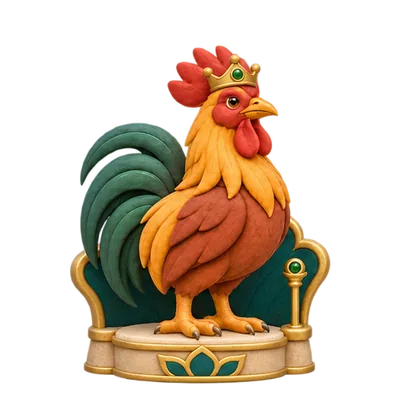

Reference
The five birds
One page per bird, with every table that belongs to it.

Vulture
வல்லூறு
அFirst of the five, tied to the opening vowel. Broad-winged and patient.

Owl
ஆந்தை
இThe watcher. Second in the order, at home in the quiet hours.

Crow
காகம்
உThe middle bird. Its star group gives the Crow in both halves of the month.

Cock
கோழி
எThe herald of sunrise, which is where every Panchapakshi day begins.
Peacock
மயில்
ஒLast in the order and the showiest. The sample bird in the Vihanga Hora app.
How to use a bird page
Each page holds one bird’s complete timetable: its main activity for every weekday and slot, by day and by night, in both halves of the month. Under that are its ruling days, death days, friends, enemies and birth stars.
If the tables are new to you, lesson 6 explains how they are built.